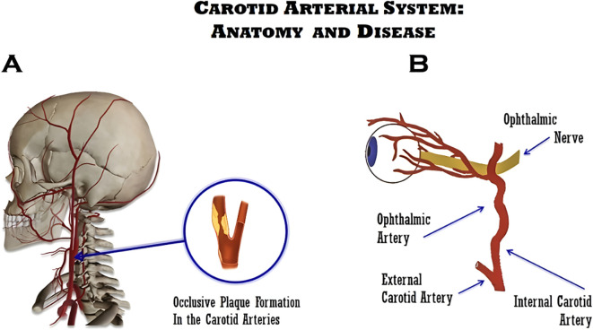
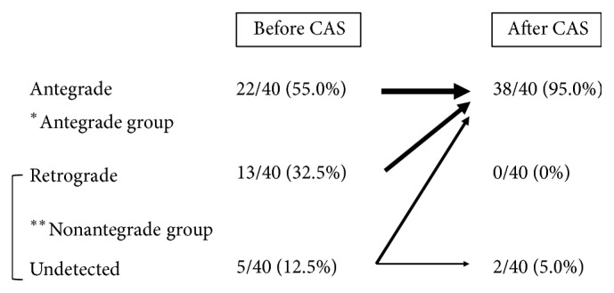
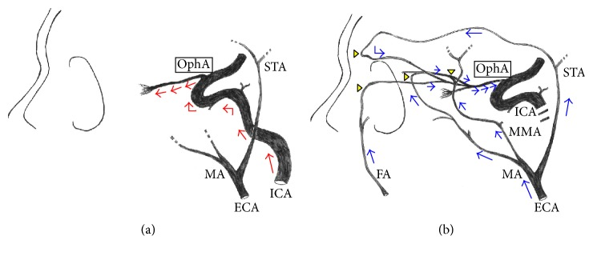
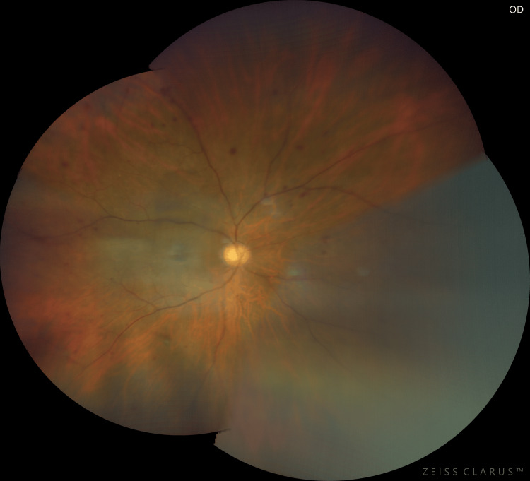
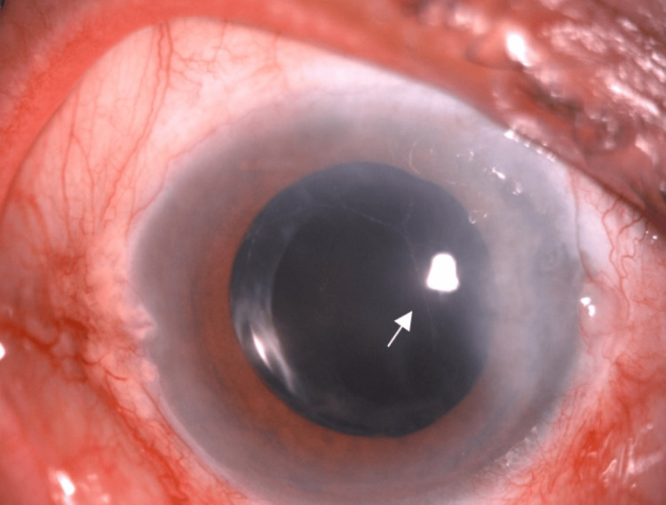
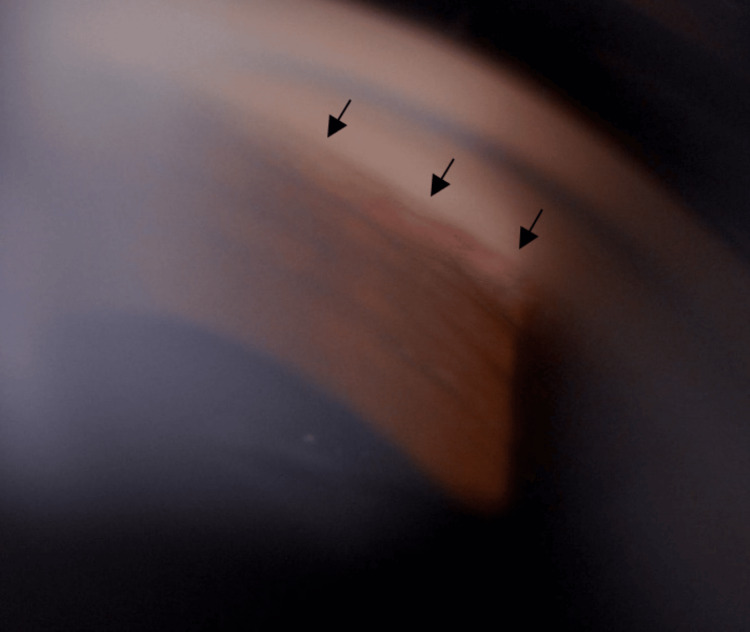
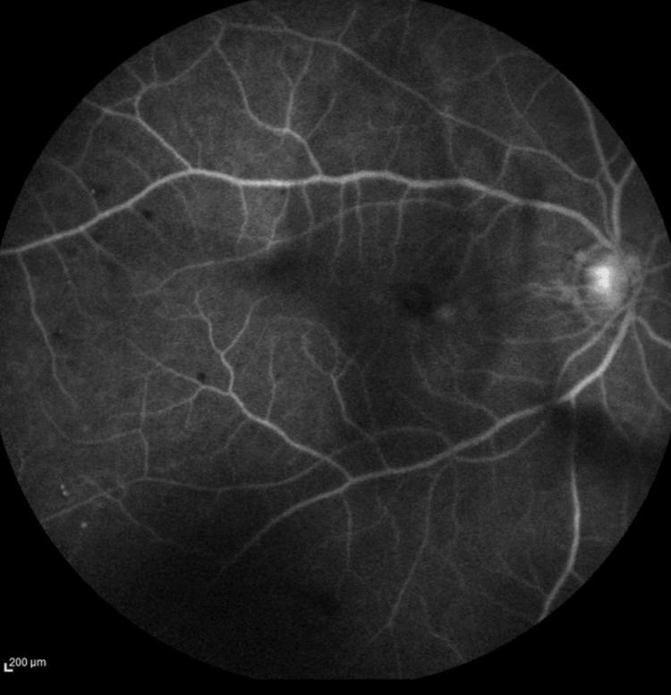

274 — Thiếu máu mắt (OIS) và glôcôm tân mạch sau tái thông động mạch cảnh / Ocular ischemic syndrome and neovascular glaucoma after carotid revascularization
Tags: pattern:thieu-mau-vong-mac pattern:xuat-huyet-diem pattern:tan-mach-mong-mat pattern:glocom-tan-mach vung:mat vung:dong-mach-canh protocol:FA protocol:SA-Doppler protocol:CTA-co-can-quang protocol:TCD protocol:OCT
Mức chắc chắn (certainty): tổng hợp y văn (literature synthesis) — 1 tổng quan hệ thống kê về OIS và bệnh cảnh cảnh (Front Ophthalmol 2026, PMC12890682, CC BY 4.0), 1 đoàn hệ 260 bệnh nhân hẹp cảnh trong ≥ 70% có mô hình dự báo OIS (Int Ophthalmol 2025, PMC12049290, CC BY-NC-ND), 1 nghiên cứu 40 tổn thương trước–sau đặt stent cảnh đo hướng dòng động mạch mắt trên DSA (J Ophthalmol 2016, PMC5192319, CC BY), 1 ca OIS kèm glôcôm tân mạch có ảnh đáy mắt–FFA–gonioscopy (Cureus 2025, PMC12126846, CC BY 4.0) và 1 ca glôcôm tân mạch MẮT ĐỐI BÊN ngày 3 sau bóc nội mạc cảnh (J Vasc Surg Cases Innov Tech 2018, PMC6012985, CC BY-NC-ND 4.0). Không có ca nguyên văn của nhóm — 3 ca trong quiz là ca công bố, lấy nguyên văn từ bài gốc.
Câu chốt: OIS không phải "mắt thiếu máu thoáng qua" mà là mắt bị tụt áp lực tưới máu mạn tính vì hẹp cảnh, và glôcôm tân mạch (NVG) là mốc không quay lại được. Ba số phải thuộc: OIS 7,5 ca/triệu người/năm nhưng tử vong 5 năm 40% (tim rồi đột quỵ) và 58% thị lực < đếm ngón tay sau 1 năm; trong 260 bệnh nhân hẹp cảnh trong ≥ 70%, 46,2% có OIS và 23,3% trong số đó đã có tân mạch mống mắt; dòng động mạch mắt ĐẢO NGƯỢC gặp 36,7% (44/120) ở nhóm OIS so với 11,4% (16/140) nhóm chứng. Và cạm bẫy lớn nhất: tái thông cảnh có thể làm glôcôm tân mạch bùng lên — đã có 12 ca sau bóc nội mạc cảnh, có ca ngày 3 sau mổ, nhãn áp 35 mmHg.
1. Tổng quan bệnh học – cơ chế hình ảnh
1.1 Vì sao mắt chịu hẹp cảnh 90% mà vẫn có ca OIS khi hẹp 25%
Giải phẫu: động mạch mắt (ophthalmic artery, OA) là nhánh nội sọ đầu tiên của động mạch cảnh trong (ICA); áp lực tưới máu mắt phụ thuộc áp lực OA, mà OA lại được nuôi xuôi dòng từ ICA và ngược dòng từ các nhánh động mạch cảnh ngoài (ECA) qua động mạch trên ổ mắt, động mạch mặt, động mạch hàm trong, động mạch màng não giữa.

(A) Mảng xơ vữa làm hẹp lòng động mạch cảnh; (B) động mạch mắt là nhánh của ICA — vị trí giải thích vì sao hẹp cảnh gây thiếu máu nhãn cầu. Nguồn: Ávila-Figueroa et al., Front Ophthalmol 2026, PMC12890682, CC BY 4.0.Sinh lý bệnh: khi ICA hẹp dần, tiểu động mạch võng mạc giãn tối đa để giữ lưu lượng (tự điều hòa). Khi dự trữ giãn cạn, lưu lượng tuyến tính với áp lực tưới máu — đúng cơ chế của CHS (bài 271) nhưng ở mắt biểu hiện bằng thiếu máu mạn thay vì phù–xuất huyết não.
Ngưỡng: hẹp ≥ 90% là mức thường gặp trong OIS và 50% ca có tắc hoàn toàn ICA cùng bên; nhưng hẹp < 50% vẫn gây OIS nếu tuần hoàn bàng hệ kém (Mendrinos), và ca trong quiz dưới đây chỉ hẹp 25% trên CTA. Vì vậy mức hẹp một mình không loại trừ OIS — phải đọc hướng dòng OA + tuần hoàn bàng hệ.
Số liệu đoàn hệ 260 ca hẹp ≥ 70% (OIS 120, chứng 140): hẹp/tắc ICA cùng bên OR 2,749 (1,393–5,422); mảng xơ KHÔNG ỔN ĐỊNH cùng bên OR 9,229 (4,110–20,721); dòng OA bất thường OR 3,807 (1,899–7,631); hẹp nặng tuần hoàn TRƯỚC đối bên OR 3,404 (1,716–6,749); tăng huyết áp là yếu tố bảo vệ OR 0,388 (0,177–0,847). Mô hình dự báo OIS AUC 0,834 (0,784–0,885), độ nhạy 81,3%, độ đặc hiệu 67,8%.
Ai dễ có tân mạch mống mắt (NVI): trong 120 ca OIS, 28 ca (23,3%) có NVI; đái tháo đường OR 4,710 (1,475–15,042) và OA đảo ngược OR 2,712 (1,079–6,816); mô hình NVI AUC 0,724. Tức thiếu máu mạn + ĐTĐ = mắt đã đi qua điểm không hồi phục.
1.2 Vì sao hình ảnh trông như vậy — vật lý FA, Doppler và OCT
- FA (fluorescein angiography) đo DÒNG CHẢY, không đo mạch máu: fluorescein đi theo huyết tương, nên thời gian xuất hiện phản ánh thời gian vận chuyển. Ba ngưỡng dùng để chẩn đoán OIS: mạch–hắc mạc (arm-to-choroid) > 15 giây, mạch–võng mạc (arm-to-retina) > 18 giây, thời gian động–tĩnh mạch (AV transit) > 11 giây. Trong tổng quan: chậm đổ đầy hắc mạc 60%, AV > 11 giây là dấu nhạy nhất (95%) nhưng kém đặc hiệu nhất, ngấm muộn thành mạch 85%, phù hoàng điểm muộn 17%; ca minh họa có AV 20 giây và mất mao mạch ngoại vi.
- Vì sao chậm đổ đầy hắc mạc lại đặc hiệu: hắc mạc được nuôi bởi động mạch mi sau (từ OA), một hệ áp lực thấp, lưu lượng cao; khi OA tụt áp, hắc mạc mất đổ đầy từng mảng trước khi võng mạc mất — khác CRVO, nơi đổ đầy hắc mạc bình thường và bệnh nằm ở tĩnh mạch võng mạc.
- Xuất huyết điểm giữa ngoại vi (mid-peripheral dot-blot): máu ứ ở đám rối mao mạch sâu do tăng áp tĩnh mạch + thiếu oxy thành mạch; vị trí giữa ngoại vi (không lan tới hậu cực) là dấu phân biệt với ĐTĐ tăng sinh (xuất huyết rải rác cả hậu cực, kèm vi phình mạch).
- Tân mạch mống mắt/góc: thiếu máu đoạn sau làm VEGF tăng (yếu tố sinh mạch); mạch mới mọc trên mống mắt và góc tiền phòng rồi bít đường thoát thủy dịch → nhãn áp tăng.
- Nhãn áp có thể BÌNH THƯỜNG hoặc THẤP: thể mi (ciliary body) thiếu máu làm giảm sản xuất thủy dịch — nhưng 50% ca OIS vẫn tăng nhãn áp, thường vì NVG. Vì vậy nhãn áp bình thường không loại trừ OIS, và nhãn áp thấp ở mắt đau/mờ phải nghĩ thiếu máu thể mi.
- Siêu âm Doppler cảnh (DUS): độ nhạy 94%, độ đặc hiệu 92% cho hẹp 60–99%; đo PSV, EDV, tỉ số S/D, chỉ số sức cản; là bước đầu tiên theo hướng dẫn ESVS 2023 vì rẻ, không xâm lấn — nhưng phụ thuộc người làm và đánh giá thấp mảng vôi hóa nặng.
- Hướng dòng OA trên DSA/TCD: bình thường xuôi dòng từ ICA; khi ICA hẹp nặng, OA nhận máu ngược từ ECA để nuôi não → dòng đảo ngược, làm mắt bị "ăn cắp" máu. Trong 40 tổn thương trước đặt stent: xuôi dòng 22/40 (55,0%), đảo ngược 13/40 (32,5%), không thấy 5/40 (12,5%); sau stent 38/40 (95,0%) xuôi dòng, 0 đảo ngược. Lưu lượng đầu thị (laser speckle) tăng từ 16,7 ± 4,8 lên 18,5 ± 4,8 đơn vị (p = 0,003) ở bên can thiệp, bên đối diện không đổi (p = 0,22).

*Trước stent: xuôi dòng 55,0%, đảo ngược 32,5%, không thấy 12,5%. Sau stent: xuôi dòng 95,0%, đảo ngược 0% — tái thông "sửa" được hướng dòng nhưng không sửa được tân mạch đã hình thành. Nguồn: Ishii et al., J Ophthalmol 2016, PMC5192319, CC BY.*
Trái (a): động mạch mắt nhận máu xuôi dòng từ động mạch cảnh trong (ICA). Phải (b): khi ICA hẹp nặng, máu đi ngược từ động mạch cảnh ngoài (ECA) qua các nhánh nối (động mạch trên ổ mắt, mặt, hàm trong, màng não giữa) vào động mạch mắt — đúng cơ chế "mắt bị ăn cắp máu". Nguồn: Ishii et al., J Ophthalmol 2016, PMC5192319, CC BY.1.3 Vì sao TÁI THÔNG cảnh lại có thể làm bùng glôcôm tân mạch
- Trước mổ, mắt đã có tân mạch và/hoặc thể mi thiếu máu: mạch mới bít góc kín nhưng sản xuất thủy dịch còn thấp vì thể mi "đói" — nhãn áp có thể bình thường hoặc thấp.
- Sau khi mở hẹp, áp lực tưới máu tăng đột ngột: thể mi hồi phục sản xuất thủy dịch nhanh hơn khả năng thoát qua góc đã bị tân mạch bít → nhãn áp tăng vọt. Đây là cơ chế được mô tả trong ca bóc nội mạc cảnh (CEA) phải ở bệnh nhân tắc ICA trái + hẹp 80% phải: mắt trái (đối bên) đỡ đau và nhìn tốt hơn ngay sau mổ, rồi ngày 3 đau lại, thị lực từ 6/60 xuống đếm ngón tay, giác mạc phù, nhãn áp 35 mmHg, giảm còn 14 mmHg sau thuốc hạ nhãn áp + corticoid.
- Tân mạch đã hình thành thì không "tan" theo dòng máu: tái thông cải thiện triệu chứng thiếu máu nhưng không đảo ngược mạng mạch mới trong góc; vì vậy can thiệp chỉ có lợi về thị lực khi làm TRƯỚC khi có tân mạch mống mắt/glôcôm (tổng quan nêu rõ).
- Bằng chứng dịch tễ: NVG sau CEA cực hiếm — tổng quan của Ng et al. chỉ 12 ca được ghi nhận, tất cả cùng bên can thiệp; ca nêu trên là ca đối bên đầu tiên. Có ca NVG sau đặt stent cảnh (CAS) và ca NVG bị che lấp bởi hội chứng tăng tưới máu (bài 271: ngày 10 sau CAS, mù không hồi phục).
- Hệ quả thực hành: mọi bệnh nhân có triệu chứng mắt + hẹp cảnh phải khám mắt trước can thiệp (thị lực, nhãn áp, gonioscopy) và đo nhãn áp ngày 1, 3, 7, 10 sau can thiệp — nhất là khi đã có tân mạch hoặc đau hốc mắt.
2. Mẫu hình + chẩn đoán phân biệt theo vị trí (Gamut)
- Theo đoạn bị thiếu máu:
- Đoạn trước (anterior segment): tân mạch mống mắt/góc, viêm tiền phòng (flare + tế bào), phù giác mạc, đồng tử giãn cố định hoặc bán giãn do thiếu máu cơ thể mi, đục thể thủy tinh; đau hốc mắt 40%.
- Đoạn sau (posterior segment): xuất huyết điểm giữa ngoại vi 80%, động mạch hẹp–tĩnh mạch giãn, vi phình mạch, điểm đỏ anh đào 12% (thường do thuyên tắc động mạch trung tâm võng mạc đi kèm), phù hoàng điểm, teo thị.
- Cả hai: thể "toàn nhãn cầu" — tiên lượng xấu nhất, thường đã có NVG.
- Theo mẫu hình "bệnh võng mạc KHÔNG ĐỐI XỨNG": OIS · tắc tĩnh mạch võng mạc trung tâm (CRVO) · bệnh võng mạc ĐTĐ tăng sinh (PDR) một bên · bệnh võng mạc do xạ · hội chứng thiếu máu cục bộ mắt sau phẫu thuật chiết quang.
- Theo nguyên nhân gây NVG (95% do thiếu máu võng mạc): ĐTĐ tăng sinh 33%, CRVO thiếu máu 33%, OIS 13%, còn lại: tắc động mạch trung tâm võng mạc, u nội nhãn, bong võng mạc mạn.
- Theo nguyên nhân hẹp cảnh (gamut mạch): xơ vữa (thường gặp nhất) · bóc tách cảnh (bài 1773) · Takayasu (nữ trẻ, hẹp dài–nhẵn) · viêm mạch tế bào khổng lồ (GCA) (tuổi > 50, đau đầu, hàm đi khập khiễng) · xơ hóa do xạ cổ (bài 260) · carotid web (bài 270).
- Gợi nhớ 5 câu hỏi trước khi gọi OIS: (1) mất thị lực một bên, từ từ? (2) đau hốc mắt cùng bên? (3) xuất huyết điểm giữa ngoại vi? (4) tân mạch mống mắt/góc? (5) FA chậm đổ đầy hắc mạc? — 3/5 là đủ chỉ định siêu âm Doppler cảnh.
3. Bảng so sánh phân biệt (ma trận đối chiếu)
| Thực thể (entity) | Hình ảnh điển hình | Chốt vào (rule-in) | Chốt loại (rule-out) | Gợi ý xác nhận |
|---|---|---|---|---|
| OIS do hẹp cảnh | Xuất huyết điểm giữa ngoại vi, động mạch hẹp–tĩnh mạch giãn, tân mạch mống mắt/góc, chậm đổ đầy hắc mạc từng mảng | AV > 11 giây + arm-to-choroid > 15 giây; dòng OA đảo ngược; hẹp ICA cùng bên ≥ 70% hoặc tắc | Đổ đầy hắc mạc bình thường + không đảo dòng OA → tìm nguyên nhân khác | DUS cảnh, CTA/MRA, TCD OA, FA |
| CRVO thiếu máu | Xuất huyết bốn góc phần tư, tĩnh mạch giãn ngoằn ngoèo, phù gai, đổ đầy hắc mạc bình thường, không đảo dòng OA | Xuất huyết lan rộng tới hậu cực + tĩnh mạch giãn; OCT dày hoàng điểm | Chậm đổ đầy hắc mạc + đảo dòng OA → OIS chứ không phải CRVO | FA, OCT, siêu âm cảnh |
| PDR | Vi phình mạch, xuất huyết rải rác cả hậu cực, tân mạch đĩa/võng mạc, đổ đầy hắc mạc bình thường | Tiền sử ĐTĐ + tân mạch đĩa; OCT có phù hoàng điểm ĐTĐ | Một bên, không ĐTĐ, xuất huyết chỉ giữa ngoại vi → nghĩ OIS | FA, OCT, HbA1c, siêu âm cảnh |
| Tắc động mạch trung tâm võng mạc (CRAO) | Võng mạc trắng đục, điểm đỏ anh đào, đổ đầy rất chậm hoặc không | Mất thị lực đột ngột vài giây–phút + điểm đỏ anh đào | Đau mạn tính từng đợt + xuất huyết điểm → OIS | FA, siêu âm cảnh, siêu âm tim |
| Viêm mạch (Takayasu / GCA) | Hẹp dài–nhẵn, thành mạch dày, không vôi hóa; GCA có thể tắc động mạch mi sau | Tuổi > 50 + ESR/CRP tăng + đau hàm (GCA); nữ trẻ + mạch không bắt (Takayasu) | Hẹp có vôi hóa tại hành cảnh → xơ vữa | CRP/ESR, CTA/MRA, PET-CT |
| Bệnh võng mạc do xạ | Tổn thương trong trường chiếu, thiếu máu mao mạch, xuất huyết, tân mạch muộn | Tiền sử xạ đầu cổ trong 6–24 tháng + tổn thương dừng ở bờ trường chiếu | Tổn thương ngoài trường xạ → không phải do xạ | So sánh bản đồ liều, FA, OCT |
- Ảnh ghép đối chiếu: không tạo ảnh ghép cho bài này vì các ảnh thuộc 3 bệnh nhân khác nhau, khác modality (đáy mắt, FFA, DSA, sơ đồ) — ghép cạnh nhau dễ gợi ý sai là một ca; ảnh giữ nguyên bản, đặt riêng.
4. Protocol chụp + hệ phân độ và xử trí
4.1 Khám mắt tối thiểu (trước mọi can thiệp cảnh)
- Thị lực có kính, nhãn áp hai mắt, soi góc (gonioscopy) hai mắt — không có soi góc thì bỏ sót tân mạch góc tới 100% ở ca góc mở; soi đáy mắt giãn đồng tử; chiếu sáng mạnh tìm amaurosis do ánh sáng.
- FA khi nghi OIS: ghi thời gian mạch–hắc mạc, mạch–võng mạc, AV, tìm mất mao mạch ngoại vi, ngấm muộn thành mạch, phù hoàng điểm.
- OCT/EDI-OCT: phù hoàng điểm, teo võng mạc, hắc mạc mỏng ở vùng thiếu máu mạn (định lượng độ dày hắc mạc dưới hoàng điểm theo tuổi–trục nhãn cầu); OCTA đánh giá mật độ mao mạch.
4.2 Chẩn đoán nguyên nhân mạch
- DUS cảnh trước (Se 94%, Sp 92% cho hẹp 60–99%); CTA hoặc MRA xác nhận mức hẹp, mảng xơ, tuần hoàn bàng hệ; TCD đo hướng/ vận tốc dòng OA. Theo NASCET: nhẹ < 50%, trung bình 50–69%, nặng 70–99%, tắc 100%.
- Không dùng chụp mạch xâm lấn chỉ để chẩn đoán vì nguy cơ đột quỵ do thủ thuật.
- Tầm soát nguyên nhân khác: HbA1c, lipid, CRP/ESR (GCA nếu > 50 tuổi), huyết áp, ECG và siêu âm tim nếu có thuyên tắc.
4.3 Xử trí mắt trước và sau tái thông
- Chưa có tân mạch: PRP (quang đông toàn võng mạc) khi có tân mạch mống mắt/võng mạc; anti-VEGF nội nhãn kiểm soát tân mạch và phù hoàng điểm; thuốc hạ nhãn áp tại chỗ (chẹn beta, đồng vận alpha-2, ức chế carbonic anhydrase); TRÁNH prostaglandin, pilocarpine và kháng cholinergic vì gây viêm.
- Đã có NVG: phẫu thuật lọc (trabeculectomy) hoặc van dẫn lưu (Ahmed) khi nhãn áp không đáp ứng; tiêm anti-VEGF trước mổ để giảm nguy cơ chảy máu; corticoid tại chỗ + liệt thể mi để kiểm soát viêm và dính mống mắt.
- Tái thông cảnh: CEA/CAS cho hẹp 50–99% có triệu chứng hoặc 60–99% không triệu chứng; CEA + aspirin giảm đột quỵ 2 năm 9% so với 26% ở nhóm chỉ aspirin. Tái thông cải thiện thị lực ở 60% ca OIS mạn, hết cơn amaurosis, và đảo ngược dòng OA — nhưng chỉ có lợi khi chưa có tân mạch/glôcôm.
- Theo dõi sau can thiệp: nhãn áp + soi góc ngày 1, 3, 7 và 10; cảnh báo bệnh nhân đau hốc mắt, nhìn mờ, buồn nôn, đau đầu là dấu hiệu cấp cứu; nếu nhãn áp tăng, điều trị như NVG và không chờ vì thị lực mất nhanh.
flowchart TD
A[Người trên 50 tuổi, mất thị lực MỘT bên + đau hốc mắt] --> B[Thị lực, nhãn áp, soi góc, soi đáy mắt]
B -->|Tân mạch mống mắt hoặc góc| C[Glôcôm tân mạch: hạ nhãn áp + PRP/anti-VEGF]
B -->|Xuất huyết điểm giữa ngoại vi| D[FA: thời gian mạch–hắc mạc trên 15 giây?]
D -->|Có| E[Siêu âm Doppler cảnh + CTA hoặc MRA + TCD động mạch mắt]
D -->|Không| F[Tìm CRVO, ĐTĐ tăng sinh, bệnh võng mạc do xạ]
C --> E
E -->|Hẹp 50–99% có triệu chứng| G{Đã có tân mạch mống mắt?}
G -->|Chưa| H[CEA hoặc CAS + kiểm soát huyết áp]
G -->|Rồi| I[Vẫn tái thông nếu chỉ định mạch, nhưng thị lực khó hồi]
H --> J[Đo nhãn áp ngày 1, 3, 7, 10 sau can thiệp]
I --> J
4.4 Phân độ thực hành (không có RADS cho mắt–cảnh)
- Bậc 1 — OIS chưa tân mạch: triệu chứng thiếu máu ± xuất huyết điểm, chưa có NVI, nhãn áp bình thường → tái thông là ưu tiên, tiên lượng thị lực tốt nhất.
- Bậc 2 — OIS có tân mạch, góc còn mở: NVI/góc chưa dính, nhãn áp còn kiểm soát → PRP ± anti-VEGF + tái thông, theo dõi sát góc.
- Bậc 3 — NVG dính góc, nhãn áp cao: đau, giác mạc phù, nhãn áp 35–52 mmHg trong các ca minh họa → hạ nhãn áp + phẫu thuật dẫn lưu, thị lực thường < đếm ngón tay; tái thông không cứu được thị lực đã mất.
5. Biến thể bình thường và cạm bẫy
- Hẹp nhẹ KHÔNG loại trừ OIS: ca minh họa hẹp 25% trên CTA, 36% và 47% trên Doppler hai bên, vẫn có NVG nhãn áp 52 mmHg — vì tuần hoàn bàng hệ kém. Đừng đợi "hẹp ≥ 70%" mới nghĩ OIS.
- Nhãn áp bình thường hoặc thấp: thiếu máu thể mi giảm sản xuất thủy dịch; đừng loại trừ NVG chỉ vì nhãn áp 14–16 mmHg ở mắt đã có tân mạch góc.
- Bỏ sót tân mạch góc: mống mắt có thể chỉ vài sợi mảnh; phải soi góc 360° và soi góc mắt đối bên. Tân mạch mống mắt không triệu chứng ở giai đoạn đầu.
- Nhầm với CRVO: CRVO có xuất huyết lan tới hậu cực + tĩnh mạch giãn; OIS có xuất huyết giữa ngoại vi + chậm đổ đầy hắc mạc. Điều trị ngược nhau (CRVO: anti-VEGF/tiêm; OIS: tái thông cảnh).
- Sau tái thông, đừng quy mọi đau mắt là "bình thường sau mổ": NVG có thể xuất hiện ngày 3 hoặc ngày 10 (bài 271), kèm đau đầu, buồn nôn — dễ nhầm với CHS hoặc đau đầu sau gây tê.
- Thuốc làm nặng: prostaglandin và pilocarpine gây viêm tiền phòng ở mắt thiếu máu; tránh dùng trước khi kiểm soát viêm.
- Sai lầm "chỉ khám mắt, không khám cảnh": OIS là dấu hiệu của bệnh mạch máu hệ thống — 40% tử vong trong 5 năm; phải chuyển thần kinh/mạch máu ngay, không chỉ theo dõi mắt.
6. Tự lượng giá — Blind Quiz
Ca 1 — Nam 72 tuổi, mờ mắt phải 6 tháng, nặng 2 tháng, đau đầu thái dương từng cơn. Thị lực 6/60, nhãn áp 52 mmHg. Nhìn ảnh đáy mắt, mô tả trước.

- Câu hỏi: Có mấy loại tổn thương? Vì sao nhãn áp lại cao? Ba chẩn đoán phân biệt và một thăm dò chốt?
Bấm để hiện đáp án (findings + chẩn đoán)
- Dấu hiệu: gai thị lõm CDR 0,7, nhiều xuất huyết điểm (dot-blot) ở vùng giữa ngoại vi bốn góc phần tư, động mạch võng mạc hẹp, tĩnh mạch giãn nhẹ; không thấy tân mạch đĩa.
- Chẩn đoán: OIS kèm NVG — soi góc cho thấy tân mạch gần 360°, tiền phòng có tế bào 1+ và fibrin, FA có AV 20 giây và mất mao mạch ngoại vi.
- Vì sao nhãn áp 52: tân mạch bít góc làm giảm thoát thủy dịch, cộng viêm tiền phòng.
- Ba phân biệt: CRVO thiếu máu, PDR, tắc động mạch trung tâm võng mạc; FA (chậm đổ đầy hắc mạc) là thăm dò chốt hướng OIS.
- Đối chiếu ảnh: xem thêm ảnh tiền phòng và góc dưới đây.
- Điều trị trong ca gốc: PRP + thuốc hạ nhãn áp tại chỗ/toàn thân + corticoid–liệt thể mi + Ahmed ClearPath 250; sau 7 tháng 6/12, nhãn áp 10 mmHg, tân mạch thoái triển nhưng gai thị nhợt, ám điểm mũi dưới tồn tại.
- Nguồn: Zainuddin et al., Cureus 2025;17:e83336, PMC12126846, CC BY 4.0.


Hai ảnh cùng bệnh nhân ca 1: tiền phòng có fibrin (mũi tên trắng) và góc có tân mạch (mũi tên đen). Nguồn: PMC12126846, CC BY 4.0.Ca 2 — Cùng bệnh nhân, FFA thì muộn. Nhìn ảnh, trả lời trước khi mở đáp án.

- Câu hỏi: Dấu hiệu nào trên FFA phân biệt OIS với CRVO? Con số thời gian nào được dùng để chẩn đoán?
Bấm để hiện đáp án
- Dấu hiệu: mất mao mạch (capillary fallout) lan rộng ở ngoại vi, bờ hoàng điểm còn tưới máu; không có xuất huyết lan tới hậu cực như CRVO.
- Ngưỡng: arm-to-choroid > 15 giây, arm-to-retina > 18 giây, AV > 11 giây; ca này AV 20 giây. Chậm đổ đầy hắc mạc từng mảng là dấu đặc hiệu nhất, gặp 60% ca OIS; AV > 11 giây nhạy 95% nhưng kém đặc hiệu.
- Vì sao: hắc mạc do động mạch mi sau (áp lực thấp) nên mất đổ đầy trước; CRVO tổn thương ở tĩnh mạch, hắc mạc vẫn đổ đầy bình thường.
- Nguồn: PMC12126846, CC BY 4.0; ngưỡng theo PMC12890682.
Ca 3 — Nam 69 tuổi, tắc động mạch cảnh trong trái, hẹp 80% cảnh trong phải, mắt trái có OIS. Mổ bóc nội mạc cảnh PHẢI. Ngày 3 sau mổ: đau mắt trái, thị lực từ 6/60 xuống đếm ngón tay, giác mạc phù, nhãn áp 35 mmHg.
- Câu hỏi: Vì sao glôcôm tân mạch xuất hiện ở mắt ĐỐI BÊN sau mổ? Xử trí ngay và theo dõi gì?
Bấm để hiện đáp án
- Cơ chế: mắt trái được nuôi bàng hệ từ hệ cảnh phải; khi mở hẹp cảnh phải, áp lực tưới máu mắt trái tăng đột ngột → thể mi tăng sản xuất thủy dịch trong khi góc đã có tân mạch → nhãn áp tăng. Đây là ca đối bên đầu tiên; 12 ca trước đều cùng bên.
- Xử trí: thuốc hạ nhãn áp tại chỗ + acetazolamide uống, corticoid tại chỗ; trong ca gốc nhãn áp về 14 mmHg ngày hôm sau, đau và nhìn cải thiện.
- Theo dõi: nhãn áp và soi góc ngày 1, 3, 7, 10 sau mọi can thiệp cảnh ở bệnh nhân có tiền sử OIS; khám mắt trước can thiệp để biết nhãn áp nền và tân mạch.
- Bài học: tái thông cứu được mắt trước khi tân mạch hình thành; khi đã có tân mạch, tái thông vẫn có thể làm glôcôm nặng thêm.
- Nguồn: Radojcic et al., J Vasc Surg Cases Innov Tech 2018;4:112–114, PMC6012985, CC BY-NC-ND 4.0; ca NVG sau CAS ngày 10: bài 271.
Bài liên quan chéo
- 271 – Hội chứng tăng tưới máu não sau can thiệp cảnh (ca NVG ngày 10 sau CAS, mù không hồi phục)
- 270 – Carotid web (nguyên nhân hẹp cảnh ở người trẻ)
- 1773 – Bóc tách động mạch cảnh cổ (nguyên nhân OIS không do xơ vữa)
- 260 – Bệnh mạch cảnh do xạ đầu cổ (hẹp cảnh sau xạ)
- 400 – Tổng quan Mắt & thị giác
Không dùng để chẩn đoán độc lập khi chưa có người hướng dẫn.